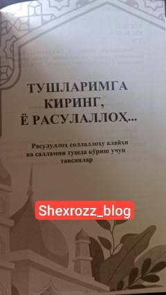

ТКРасулуллоҳ соллаллоҳу алайҳи ва салламни тушда кўриш одоблари ва усуллари ҳақидаги китоб.
Ушбу китоб Пайғамбаримиз Муҳаммад соллаллоҳу алайҳи ва салламни тушда кўришга муштоқ бўлган, у зотга қалбан боғланган инсонлар учун қўлланма сифатида тайёрланган. Нашрда Расулуллоҳни тушда кўриш одоблари, бу борадаги турли тушунмовчиликларнинг олдини олиш ва у зотга бўлган муҳаббатни ошириш ҳақида сўз юритилади.